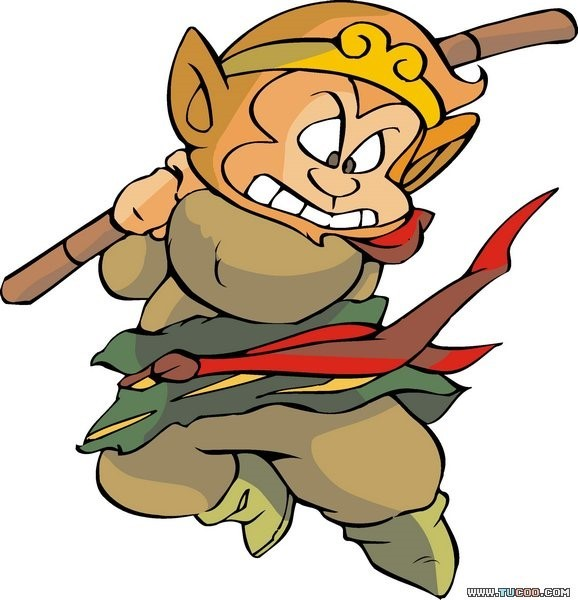

중국의 고전소설 서유기의 주인공인 원숭이 수인. 세계에서 가장 유명한 원숭이 캐릭터로 꼽힌다.
돌에서 태어나 '돌원숭'라고 불리다가 화과산에서 원숭이들의 우두머리 노릇을 하게되며 스스로를 미후왕이라 칭했다가, 잠깐동안 필마온 호칭을 들은 뒤 이후 제천대성이라는 별칭을 얻었다. 손오공은 수보리조사에게서 받은 법명이며, 이후 삼장법사에게서 손행자라는 별명도 받는다. 서천에 도달한 공적으로 부처님에게서 투전승불이라는 호칭 역시 받았다. 즉, 엄밀히 말하면 손오공도 부처는 부처다.